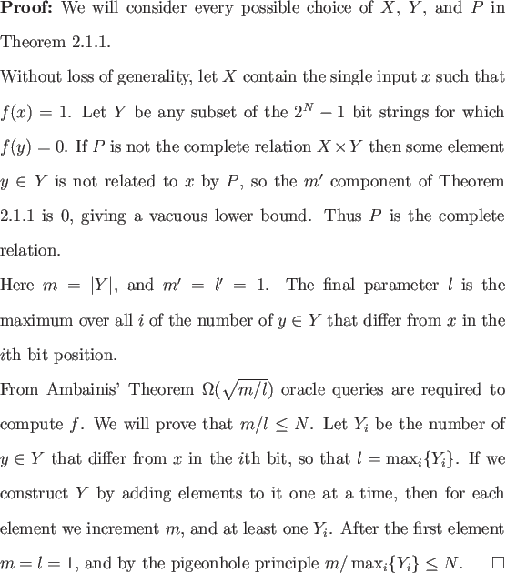

An N-bit Boolean function that evaluates to 1 for exactly one input
is a singleton function. We will show that for any N-bit singleton
function Ambainis' Theorem can always attain a lower query bound of
 (
( ), but no better.
), but no better.
The proof of the
 (
( ) lower query bound for determining
the oracle string in Theorem 2.3.1 can equally well be
applied to any singleton function.
) lower query bound for determining
the oracle string in Theorem 2.3.1 can equally well be
applied to any singleton function.

This result coupled with the N/2 lower bound for the singleton function of determining the oracle string leads immediately the the following corollary.
Despite this limitation, the theorem can still prove lower bounds for many Boolean functions. From this point forward all our lower bounds are directly or indirectly attained through Ambainis' Theorem.